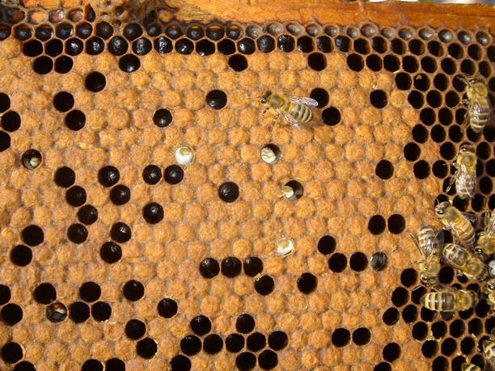

Veliki je broj specifičnih patogenih agenasa koji se enzootski javljaju kod pčela; pri tom, većina njih uzrokuje inaparentne infekcije, odnosno infestacije. Pčelinja društva, pa čak i jedinke, zahvaćene jednim, a ponekad i nekolikim patogenim agensima, često spolja izgledaju sasvim normalno; to može da potraje neodređeno dugo. Prema tome, često je veoma teško identifikovati uzroke gubitaka i poremećaja. Zbog toga dolazi do velikih zabuna i brojnih pogrešnih dijagnoza, čemu doprinosi i uobičajena tendencija da se od novopronađenih (ali veoma raširenih parazita) pravi žrtvena jagnjad, čak i onda kada se unutar društava javljaju u malom broju slučajeva. Posebno, potom, u zabludu dovode termini koji se najčešće koriste, kao što su: nozemoza, amebiaza, akaroza. Uzročnici ovih bolesti su tri parazita, koji su prvi ustanovljeni kod pčela: Nosema apis, Malpighamoeba mellificae i Acarapis woodi. Mnogi pčelari pod njima podrazumevaju bolesti kod kojih nema ispoljavanja simptoma. Ovi paraziti su odista štetni, ali za njih nikada nije dokazano da dovode do ispoljavanja ma kog spoljnjeg simptoma bolesti, mada oni često koincidiraju sa poremećajima koji dovode do takvih simptoma; neki od tih poremećaja još uvek su nepoznatog uzroka. Štete do kojih dovode raširene inaparentne infekcije i infestacije pčela − svakako su znatne; međutim, one su obično maskirane brojnim neizbežnim i kontinuiranim gubicima zdravih, ali istrošenih odraslih pčela, i njihovim konstantnim zamenjivanjem, posebno tokom aktivne sezone.
Krečno leglo je oboljenje koje je prouzrokovano gljivicom Ascosphera apis koja dovodi do uginuća radiličkog i trutovskog legla. To je heterotalična gljivica, tj. ima sposobnost da stvara i muški i ženski micelijum, koji formiraju anteridije i oogonije, a spajanjem polova stvaraju se fruktifikacioni organi u vidu okruglih cista koji sadrže spore. Spore su neverovatno vitalne i otporne na dejstvo pare sumpor-dioksida, ali i formaldehida. U mumificiranim leševima larvi, one ostaju žive i posle 15 godina.
EPIZOOTOLOGIJA Oboljenje se javlja na otvorenom i poklopljenom leglu sporadično i može se javljati u toku čitavog leta, i to od juna do septembra. Za nastanak oboljenja pored specifičnog uzročnika, veoma značajnu ulogu imaju i nespecifični faktori, u prvom redu povećana vlažnost u košnici, prehlađeno leglo i dr. Sve ovo može dovesti do toga da oboljenje može biti prisutno i nekoliko godina, što se objašnjava činjenicom da gljivice preživljavaju u srednjem crevu pčele i u medu. Ovo oboljenje nema kontagiozni karakter, iako se uzročnici mogu prenositi u prirodnim uslovima posredstvom pčela, a naročito onih koje su iz mnogobrojnih razloga izgubile orijentaciju ili zbog nesavesno sprovedenih apitehničkih mera od strane pčelara. Prirodno inficiranje nastaje sporama Ascosphera apis koje u organizam larvi prodiru preko površine tela (kroz pokrov) ili alimentarnim putem kroz digestivni trakt. Veštačko inficiranje radiličkih i trutovskih larvi može nastati unošenjem ramova sa već bolesnim leglom u zdravu zajednicu ili davanjem hrane koja sadrži gljivice ili mumificirane ili izmrvljene inficirane larve.
SIMPTOMI U zavisnosi na koji je način došlo do inficiranja i rasprostiranja micelijuma gljivica može se podeliti klinička slika koja se ispoljava u leglu, tj. larvama, i ona koja je prisutna na ramu saća sa leglom. Kada je u pitanju klinička slika u leglu, ono što je karakteristično je da, ako je inficiranje nastalo micelijumom samo jednog pola, fruktifikacioni organi se ne stvaraju, pa uginule larve imaju belu ili belo-zućkastu boju. Medjutim ukoliko je infekcija nastala sa oba pola, tj. i sa muškim i sa ženskim micelijumom, na površini i u telu bolesne i uginule larve se stvaraju fruktifikacioni organi koji uginuloj larvi daju prljavo tamno-zelenu boju. Kada je u pitanju klinička slika na ramu saća sa leglom, mlade inficirane larve koje na prvi pogled izgledaju još uvek zdrave, obično se nalaze raštrkane među zdravim leglom, dok se starije već mumificirane larve nalaze u poklopljenim ćelijama. Kada micelijum prođe kroz poklopce ćelija, prekrije spoljnu stranu poklopca i tada zatvoreno leglo ima izgled kao da je posuto brašnom, krečom ili sivkastom prašinom pa otuda i naziv za ovo oboljenje
Varoa može naneti veliku štetu u pčelinjaku. Već krajem jula početi sa kontrolom i dijagnostikom i primenom metoda za suzbijanje varoe. Bolest izaziva krpelj Varroa jacobsoni koji napada pčelinje leglo i odrasle pčele pa je zato veoma opasna kada se pojavi u većem obimu. U samom početku pojave varoe, pčelinje društvo se skoro normalno razvija tako da je nemoguće u početku primetiti a kada se raširi napravi veliku štetu u pčelinjaku. Kad pčelari primete da u košnici ima dosta meda i legla ali da nema pčela ili da ih ima sasvim malo, to je prvi znak da je pčelinje društvo intenzivno napadnuto varoom. Varoa je vidljiva golim okom, tamnosmeđe je boje. Na prvi pogled liči na pčelinju vaš.
RAZMNOŽAVANJE VAROE Razmnožavanje varoe počenje već u rano proleće. Ženka varoe polaže jaja u ćelije saća u kojima se već nalaze larve, najčešće kada je leglo staro 5-7 dana, odnosno pred samo zatvaranje legla. U jednu ćeliju ženka varoe može položiti 1-3 jajeta a ponekad i više. Ženka varoe polaže jaja pored larvi ili na njihovo telo. Za 2 dana iz ovih jaja izlegu se larve koje se zatim presvlače i pretvaraju u odraslog krpelja – varou. Za vreme rasta u leglu, krpelj se hrani hemolimfom mlade pčele na taj način je onesposobljava i skraćuje joj životni vek. Veoma je značajno da se zna da se varoa znatno povoljnije razvija kad je temperatura niža od 35 ºC. Varoa mnogo više napada trutovsko leglo nego leglo pčela radilica. Zahvaljujući tom saznanju, vrlo efikasan način borbe protiv varoe je postavljanje građevinjaka na kojim se isključivo nalaze trutovska legla i njihovim isecanjem oslobađamo društvo velikog procenta prisustva varoe. Životni vek pčela radilica i trutova izleženih iz zaraženog legla je kraći. Trutovi izleženi iz veoma zaraženog legla nisu sposobni da oplode maticu. U toku čitave godine neophodna je stalna kontrola na prisustvo varoe kako bi se pravovremeno vršilo suzbijanje njenog širenja u pčelinjem društvu.
SUZBIJANJE VAROE Do sada kod nas i u svetu nije pronađeno sredstvo za potpuno suzbijanje ovog parazita. Međutim poznata su razna sredstva i metode za suzbijanje varoe i dovođenja na tolerantan nivo. Vrlo efikasne metode za suzbijanje varoe su: – Uklanjanje trutovskog legla (zamenom ramova) – Korištenje alternativnih sredstava (KAS i slično) – Razrojavanje (prekidanje ciklusa razvoja varoe) – Korišćenje organskih kiselina (mravlja, oksalna i mlečna kiselina) – Tretiranje varoe zadimnjavanjem dozvoljenim hemijskim sredstvima